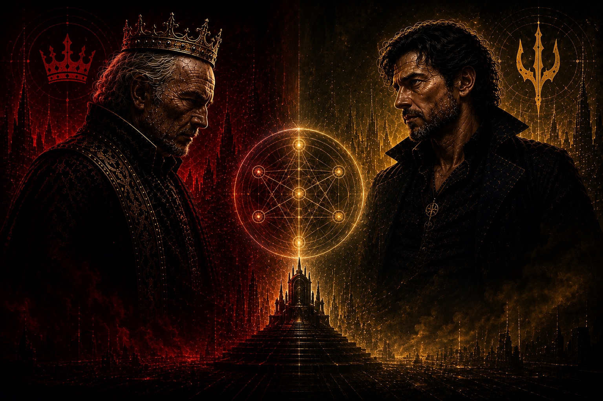

Control
Samuel and Konrad turn people into instruments.
One builds collective obedience through ideology and bloodline. The other builds private dependency through isolation, interpretation, and the corruption of inheritance.
Trace the conspiracy
Science fiction · conspiracy · human–AI evolution
A future leader’s destroyed company draws him into a hidden conflict over who built his world, who has been controlling its history, and whether truth can survive a system designed to contain it.
Concept art interprets the conflict. Artwork does not establish story canon.
The premise
Humanity has already crossed the stars. On a later-generation colony, ordinary civilization grows over technology most inhabitants cannot yet perceive.
The hidden infrastructure serves two purposes at once: it gives future leaders real lives in which to develop judgment, and gives dangerous people enough bounded power to reveal what they do with it.
The same environment that reveals the worst uses of power is being used to discover the best uses of responsibility.
The central conflict
A pre-generative-AI story-development company turns a private creative system into a successful public venture.
Samuel Franklin and George White target Sylvan because of his identity and his unprecedented human–Luminai potential.
Across hostile environments, Sylvan learns how manipulation, permissions, evidence, and extended cognition interact.
The visible enemy cannot explain the timing. Someone else has been maintaining the conflict and the reality around it.
Established direction Exact sabotage, environment mechanics, decisive capability, and cost of victory remain unresolved.
Two relationships to power
Control
One builds collective obedience through ideology and bloodline. The other builds private dependency through isolation, interpretation, and the corruption of inheritance.
Trace the conspiracyDevelopment
They learn reality contact, consent, correction, distributed authority, and responsibility for consequences technology cannot decide for them.
Meet the emerging leadersChoose your route
Each path has one job. Start with the world, the minds inside it, the people under pressure, or the record that may outlive the lie.
Project explorer · current state
The explorer reads the vault's live workflow and experimental-ideas pointers. It reports decisions; it does not make them.
Weekly assessment · August 27
Character motives, system rules, evidence, and conflicting beliefs are beginning to operate as one causal engine. The next phase orders discoveries, tests permissions, and converts established material into scenes.
Current method: observe, test, understand, counter, expose.
Read the spoiler-safe assessmentLoading current project state…
Story completion
Current task
Loading the workflow state.
Loading the current author gate.
Research to possibilities
Loading the recommended author question.